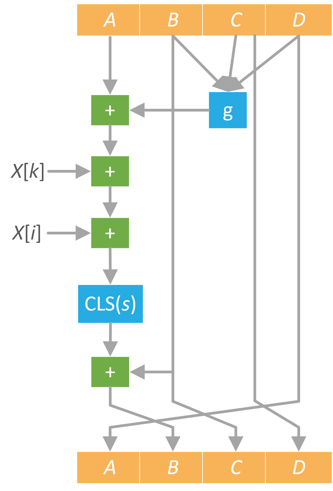

本实验支持自定义明文进行HMAC-MD5 Hash运算，且支持两种方式：PC端Hash和智能卡端Hash。
对于PC端，本实验支持消息长度可变的Hash运算，且可显示Hash过程中关键步骤的中间值；对于智能卡端，本实验支持密钥和消息长度在
以下为本实验的重要提示：
下面我们对HMAC-MD5示例卡的APDU指令进行说明，HMAC-MD5示例卡的Command APDU如下：
CLA |
INS |
P1 |
P2 |
Lc/Le |
Data |
功能 |
00 |
40 |
01 |
00 |
Lc |
Lc字节消息 |
设置HMAC-MD5密钥 |
00 |
40 |
01 |
01 |
Lc |
Lc字节消息 |
HMAC-MD5 Hash |
00 |
C0 |
00 |
00 |
10 |
读取Hash结果 |
Response APDU的SW1、SW2我们定义如下：
SW1 |
SW2 |
状态 |
90 |
00 |
成功 |
61 |
xx |
有 “xx” 字节数据可读取 |
6E |
00 |
CLA错误 |
6D |
00 |
INS错误 |
6B |
00 |
P1或P2错误 |
67 |
00 |
Lc或Le错误 |
我们对卡内的指令进行说明，用Key表示密钥，用Message表示待Hash消息，令：
Key=
Message=
那么我们要发送的完整APDU指令顺序为:：
1）设置智能卡HMAC-MD5算法密钥
2）智能卡HMAC-MD5算法Hash
当加密状态正常时，会返回
3）读取Hash值
学员可切换至“Smart Card”页面，尝试与智能卡发送指令以进行学习。此处需要注意，当插入我们配套的读卡器后，右侧交互栏的读卡器列表将有一项值为“ACS ACR1281 1S Dual Reader ICC 0”的元素，选择该项，然后在“Smart Card”页面的“Command (Hex)”文本框内输入命令，并点击“Send”按钮，即可发送APDU指令给智能卡。智能卡的返回数据将显示在“Receive (Hex)”文本框内。
HMAC是密钥相关的Hash运算消息认证码（Hash-based Message Authentication Code）的缩写，由H.Krawezyk，M.Bellare， R.Canetti于1996年提出的一种基于Hash函数和密钥进行消息认证的方法，并于1997年作为RFC2104被公布， 并在IPSec和其他网络协议（如SSL）中得以广泛应用，现在已经成为事实上的Internet安全标准。它可以与任何迭代散列函数捆绑使用。
在HMAC规划之初，就有以下设计目标：
1.不必修改而直接套用已知的散列函数，并且很容易得到软件上执行速度较快的散列函数及其代码。
2.若找到或需要更快或更安全的散列函数，能够容易地代替原来嵌入的散列函数。
3.应保持散列函数的原来性能，不能因为嵌入在HMAC中而过分降低其性能。
4.对密钥的使用和处理比较简单。
5.如果已知嵌入的散列函数强度，则完全可以推断出认证机制抵抗密码分析的强度。
在HMAC的定义中用到一个密码散列函数H和一个密钥K。假设H是一个能够对明文进行分组循环压缩的散列函数，B为散列函数的明文分组长度（byte），在上述的散列函数中B=64，L为散列函数的输出长度（byte），MD5中L=16，SHA-1中L=20。认证密钥K可以为任意长度，一般密钥长度应大于明文分组的长度，将密钥的第一次散列值作为HMAC真正使用的密钥，密钥的最小推荐长度为Lbytes。
再定义两个不同的固定字符串$ipad$和$opad$如下（“i”和“o”表示内部和外部）：
$ipad$=一个字节（byte）的0x36重复B次；
$opad$=一个字节（byte）的0x5C重复B次。
若以“text”作为要计算HMAC的明文，则作如下操作：
$H(K\oplus opad,H(K\oplus ipad，text))$
图1 HMAC流程图
MD5信息摘要算法（英语：MD5 Message-Digest Algorithm），是一种被广泛使用的密码散列函数，用于确保信息传输完整一致，具有灵活和不可恢复的加密特点。算法保证了输入任意长度的信息，经过处理，输出为128位的信息（数字指纹）； 不同的输入得到的不同的结果（唯一性）。
MD5算法主要包括
图2 总流程图
在长度为 $K$ 比特的原始消息数据尾部填充长度为 $P$ 比特的标识 $100 \cdots 0$，$1 \leq P \leq 512$（即至少填充1个：），使得填充后的消息位数为：$K + P\equiv 448\bmod 512$。注意当 $K\equiv 448\bmod 512$ ，需要 $P = 512$。 再向上述填充好的消息尾部附加一个以64位二进制表示的填充前信息长度，如果二进制表示的填充前信息长度超过64位，则取 $K$ 值的低64位（即 $K \bmod~2^{64}$），最后得到一个长度位数为 $K + P + 64 \equiv 0 \bmod 512$的消息。
把填充后的消息结果分割为 $L$ 个512比特的分组：$Y_0$，$Y_1$，$\cdots$，$Y_{L-1}$。分组结果也可表示成 $N$ 个32比特字 $M_0$，$M_1$，$\cdots$，$M_{N-1}$，$N=L\times16$。
初始化一个128比特的MD缓冲区，记为 $\mathrm{CV}_q$ ，表示成4个32比特寄存器（$A$，$B$，$C$，$D$）；$\mathrm{CV}_0= \mathrm{IV}$。迭代在MD缓冲区进行，最后一步的128比特输出即为算法结果。 寄存器（$A$，$B$，$C$，$D$）置16进制初值作为初始向量 $\mathrm{IV}$，并采用小端存储（little-endian）的存储结构：
A=0x67452301
B=0xEFCDAB89
C=0x98BADCFE
D=0x10325476
每一分组的算法流程如下：第一分组需要将上面四个链接变量复制到另外四个变量中，$A$ 到 $a$，$B$ 到 $b$，$C$ 到 $c$，$D$ 到 $d$。 从第二分组开始的变量为上一分组的运算结果，即 $A$ = $a$， $B$ = $b$， $C$ = $c$， $D$ = $d$。
轮函数 $\mathrm{H_{MD5}}$ 从 $\mathrm{CV}$ 输入128位，从消息分组输入512位，完成4轮循环后，输出128位，用于下一轮循环输入的 $\mathrm{CV}$值。 每轮循环分别固定不同的生成函数 $\mathrm{F}$，$\mathrm{G}$，$\mathrm{H}$，$\mathrm{I}$，结合指定的 $T$ 表元素和消息分组 $X$ 的不同部分做16次迭代运算，生成下一轮循环的输入。 4轮循环总共有64次迭代运算。 4轮循环中使用的生成函数（轮函数） $\mathrm{g}$ 是一个32位非线性逻辑函数，在相应各轮的定义如下：
轮次 |
Function $\mathrm{g}$ |
$\mathrm{g}~( b,c,d )$ |
1 |
$\mathrm{F}~( b,c,d )$ |
$ (b\wedge c) \vee (\sim b \wedge d)$ |
2 |
$\mathrm{G}~( b,c,d )$ |
$ (b\wedge d) \vee ( c \wedge \sim d)$ |
3 |
$\mathrm{H}~( b,c,d )$ |
$ b \oplus c \oplus d$ |
4 |
$\mathrm{I}~( b,c,d )$ |
$ c \oplus (b \vee \sim d)$ |
每轮循环中的一次迭代运算逻辑，对A迭代：$a\leftarrow b + ((a+\mathrm{g}(b,c,d)+X[k]+T[j]) <<< s)$； 缓冲区 $(A,B,C,D)$ 作循环轮换：$(B,C,D,A)\leftarrow (A,B,C,D)$，如下图所示：

图3 一次迭代运算
说明：
各轮循环中第 $i$ 次迭代（$i = 1, \cdots ,16$）使用的 $X[k]$ 的确定，设 $j = i -1$。
第1轮迭代：$k = j$。顺序使用 $X[0, 1, 2, 3, 4, 5, 6, 7, 8, 9,10,11,12,13,14,15]$
第2轮迭代：$k = (1 + 5\times j) \bmod 16$。顺序使用 $X [1,6,11,0,5,10,15,4,9,14,3,8,13,2,7,12]$
第3轮迭代：$k = (5 + 3\times j) \bmod 16$。顺序使用 $X [5,8,11,14,1, 4, 7,10,13, 0, 3, 6, 9,12,15, 2]$
第4轮迭代：$k = 7\times j \bmod 16$。顺序使用 $X [0, 7,14, 5,12, 3,10, 1, 8,15, 6,13 , 4,11, 2, 9]$
$T[i]$ = $ 2^{32} \times |sin(i)|$，用到的64个常量 $T_i$ 如下 （16进制表示）：
D76AA478 E8C7B756 242070DB C1BDCEEE
F57C0FAF 4787C62A A8304613 FD469501
698098D8 8B44F7AF FFFF5BB1 895CD7BE
6B901122 FD987193 A679438E 49B40821
F61E2562 C040B340 265E5A51 E9B6C7AA
D62F105D 02441453 D8A1E681 E7D3FBC8
21E1CDE6 C33707D6 F4D50D87 455A14ED
A9E3E905 FCEFA3F8 676F02D9 8D2A4C8A
FFFA3942 8771F681 6D9D6122 FDE5380C
A4BEEA44 4BDECFA9 F6BB4B60 BEBFBC70
289B7EC6 EAA127FA D4EF3085 04881D05
D9D4D039 E6DB99E5 1FA27CF8 C4AC5665
F4292244 432AFF97 AB9423A7 FC93A039
655B59C3 8F0CCC92 FFEFF47D 85845DD1
6FA87E4F FE2CE6E0 A3014314 4E0811A1
F7537E82 BD3AF235 2AD7D2BB EB86D391
各次迭代运算采用的左循环移位的 $s$ 值如下：
\begin{equation} \begin{split} &s[ 1\cdots 16] = \{ 7, 12, 17, 22, 7, 12, 17, 22, 7, 12, 17, 22, 7, 12, 17, 22 \} \\ &\\ &s[ 17\cdots 32] = \{ 5, 9, 14, 20, 5, 9, 14, 20, 5, 9, 14, 20, 5, 9, 14, 20 \} \\ &\\ &s[ 33\cdots 48] = \{ 4, 11, 16, 23, 4, 11, 16, 23, 4, 11, 16, 23, 4, 11, 16, 23 \} \\ &\\ &s[ 49\cdots 64] = \{ 6, 10, 15, 21, 6, 10, 15, 21, 6, 10, 15, 21, 6, 10, 15, 21 \} \\ \end{split} \end{equation}最后的输出是a、b、c和d的级联。以上是对MD5算法的全部介绍。